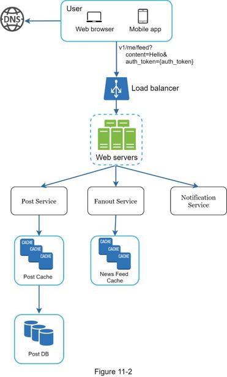
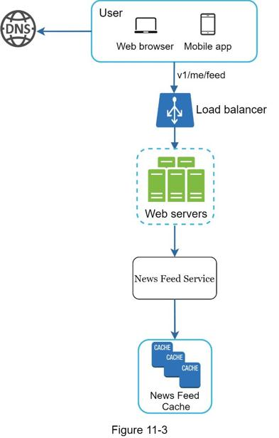

The design is divided into two flows: feed publishing and news feed building.
•Feed publishing: when a user publishes a post, corresponding data is written into cache and database. A post is populated to her friends’ news feed.
•Newsfeed building: for simplicity, let us assume the news feed is built by aggregating friends’ posts in reverse chronological order.
The news feed APIs are the primary ways for clients to communicate with servers. Those APIs are HTTP based that allow clients to perform actions, which include posting a status, retrieving news feed, adding friends, etc. We discuss two most important APIs: feed publishing API and news feed retrieval API.
Feed publishing API
To publish a post, a HTTP POST request will be sent to the server. The API is shown below:
POST /v1/me/feed
Params:
•content: content is the text of the post.
•auth_token: it is used to authenticate API requests.
Newsfeed retrieval API
The API to retrieve news feed is shown below:
GET /v1/me/feed
Params:
•auth_token: it is used to authenticate API requests.
Figure 11-2 shows the high-level design of the feed publishing flow.

•User: a user can view news feeds on a browser or mobile app. A user makes a post with content “Hello” through API:
/v1/me/feed?content=Hello&auth_token={auth_token}
•Load balancer: distribute traffic to web servers.
•Web servers: web servers redirect traffic to different internal services.
•Post service: persist post in the database and cache.
•Fanout service: push new content to friends’ news feed. Newsfeed data is stored in the cache for fast retrieval.
•Notification service: inform friends that new content is available and send out push notifications.
In this section, we discuss how news feed is built behind the scenes. Figure 11-3 shows the high-level design:

•User: a user sends a request to retrieve her news feed. The request looks like this: /v1/me/feed.
•Load balancer: load balancer redirects traffic to web servers.
•Web servers: web servers route requests to newsfeed service.
•Newsfeed service: news feed service fetches news feed from the cache.
•Newsfeed cache: store news feed IDs needed to render the news feed.